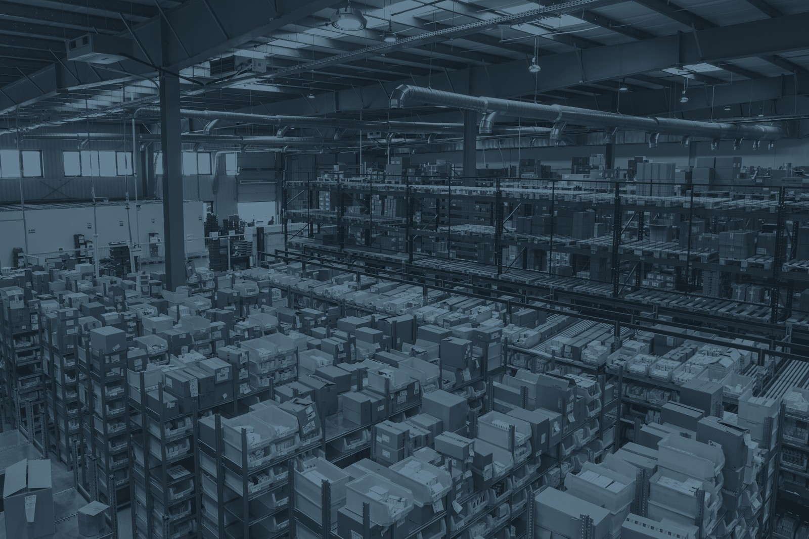

Cuatro pilares de rigor técnico
Abre cada disciplina para conocer el método y la arquitectura detrás del software. Diseñado para responder con transparencia a comités y auditores externos.
Tus datos en tu Drive, nunca en nuestro servidor.
Arquitectura Bring Your Own Storage (BYOS): balances Excel, facturas primarias de CFE y bases SQL se transmiten en streaming directo a tu Google Drive sin intermediarios ni almacenamiento de terceros.

Cálculo matricial exacto con balance de masa < 0.01%.
Resolución del sistema tecnológico A e intervenciones de biosfera B en milisegundos directamente en la nube. Trazabilidad completa de flujos elementales sin aproximaciones heurísticas.

Compatible con openLCA, Brightway y ecoinvent 3.12.
Exportación e importación en esquemas abiertos sin ataduras propietarias. Generación de paquetes JSON-LD v2 deterministas, matrices NumPy y expedientes ILCD XML auditables.
Modelado nodal para manufactura y energía.
Diseñado para procesos industriales complejos: inyección de termoplásticos, redes eléctricas de alta tensión, generación térmica y eólica y cadenas de suministro intermodal.